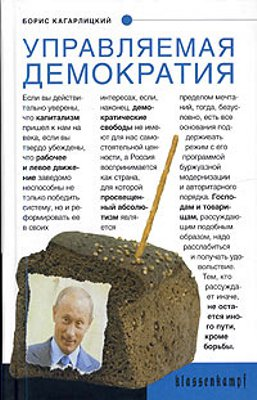
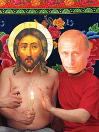
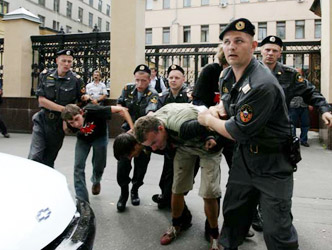

Борис Кагарлицкий • Управляемая демократия • klassenkampf • 26.12.2005

Политическая история постсоветской России, написанная с марксистских позиций. Анализ социальной природы сложившегося государства, основных политических сил и действующих лиц, показывающий несовместимость демократии и капитализма в современных условиях.
ПРЕССА И КОНТЕКСТ
Борис Кагарлицкий. Управляемая демократия: Россия, которую нам навязали (Лев Рамштейн, aglob.ru, 07.02.2006)

Новая книга Бориса Кагарлицкого вышедшая в весьма зачотной серии «Klassenkampf», тьфу, тьфу, тьфу, проколов ещё не было, представляет, по сути, политическую историю сегодняшней России. Автору удалось, в отличие от авторов множества подобного рода книг, пройти, так сказать по лезвию бритвы. То есть не увлечься различными теориями заговоров, заокеанскими масонами, православными чекистами, и прочей конспирологической белибердой в стиле альманаха «Третий глаз». И не превратить период конца XХ – начала ХХI века истории России в сплошную гангстерскую разборку. Подобного рода труды, особенно касающиеся русской истории, очень редки. Обычно рукой пишущего водят интересы, мало соответствующие объективному освещению событий. Крайне полезно для читателя, что при освещении политических событий, экономических процессов и их причин и следствий, автор руководствуется марксистским подходом к освещению истории. Поскольку подобная трактовка: во-первых, понятна людям, получившим советское и мало отличающего от него российское образование, а во-вторых, позволяет видеть историческую картину наиболее четко, и не замутнено, даже тем, кто относится к социальным концепциям марксизма с непониманием. Кто не верит, пусть попробует написать краткий курс истории РФ в стиле Шпенглера или Хаусхоффера, а потом его прочитать.
«В сложившейся ситуации, – пишет в своей книге Борис Кагарлицкий, – избранный российскими элитами курс на уничтожение собственной промышленности, разорение населения (удешевление рабочей силы), разрушение науки и превращение отечественной экономики в полуколониальную был совершенно логичным и по-своему правильным» ответом на вызов глобализации. Во всяком случае, иного способа безболезненно вписаться в открытое общество» и мировую цивилизацию у них просто не было. Другое дело, что, включив Россию в капиталистическую миросистему в качестве полуколонии, Запад, возможно, создал условия для новых глобальных потрясений в будущем».
Действительно, если взять такой аспект, как «удешевление рабочей силы», когда квалифицированные и социально адаптированные рабочие и служащие заменяются на никаких «гестарбайтеров» ради упрощения менеджмента и ежемоментной коммерческой выгоды, то локальное потрясение это может вызвать хоть завтра. А что касается глобального, то выращенный на одной шестой части суши так называемый Homo Soveticus уже принёс Западу неисчислимые беды и непонятки. Сейчас же, похоже, администрация РФ замутила новый приоритетный национальный проект – создать Homo Post-sovеticus’а, что-то вроде помеси Кинг-Конга с Анкой-пулемётчицей, видимо для того, что бы Запад окончательно содрогнулся.
И далее из книги «Победа над «русским коммунизмом» может оказаться для западного капитализма пирровой… Россия снова становиться «слабым звеном», «больным человеком» мировой капиталистической системы в конце ХХ века, как и в его начале. Россия должна экспериментировать или погибнуть. Она не просто должна отстоять свою автономию по отношению к капиталистической миросистеме, но, изменив себя, изменить и мировой экономический порядок.
Вырваться из состояния отсталости можно, лишь покончив с логикой периферийного капитализма (а другого капитализма при данных обстоятельствах в России быть, не может). Инвестиционный кризис в сочетании с кризисом государственности и культурным кризисом не может быть преодолён иначе как на основе новой мобилизационной модели. Опасность состоит в том, что до сих пор мобилизационная модель у нас ассоциируется со сталинским опытом, который повторить в современных условиях невозможно – к нашему глубочайшему счастью. Однако новый вариант мобилизационной модели должен быть найден, иначе стране предстоит десятилетиями прозябать на периферии мировой системы. Задача состоит в том чтобы, отказавшись от имитационных моделей «догоняющего развития сделать ставку на те технологии и структуры, которые станут лидирующими в XXI веке. Экономист Александр Бузгалин называет это «опережающим развитием». Мобилизация финансовых ресурсов должна задействовать главный потенциал – человеческий. Вместо того чтобы экономить на науке, необходимо превратить её в ведущую отрасль экономики. Новая экономическая модель потребует экспроприации олигархов в сочетании с реформой государства, резким повышением вертикальной мобильности для низов общества за счёт доступа к образованию здравоохранению престижным рабочим местам. Воссоздание сильного государственного сектора, ориентированного на передовые технологии, вполне может сочетаться с ростом свободного предпринимательства «снизу». И, наконец, ориентация на Запад должна смениться усилением хозяйственных, политических и культурных связей с большинством человечества – «третьим миром».
Как видно книга Бориса Кагарлицкого не только «учебное пособие» по недавней, точнее текущей истории России, но и прогноз на её ближайшее будущее. Будущее без уродливого постсовкового бюрократического капитализма, который подразумевает под «строительством Империи», строительство особняков из испанского кирпича на Рублёвке.
Сейчас историческая ситуация благосклонна к России, но администрация вместо того чтобы слышать голос разума, слушает скрип лопатника. Скорый провал благих, но химерических социальных починов Кремля подтвердит правоту выводов сделанных в «Управляемой демократии».
Управляемая реакция (Юрий Дергунов, left.ru)

Фото :: grani.ru
Все-таки, я не могу не завидовать работоспособности некоторых людей. Лицо нашей «неавторитарной» левой Борис Кагарлицкий разродился очередной книгой – и это после такой увесистой карикатуры на марксизм! Новая книга, на этот раз – о постсоветской России, представляет собой изрядно переработанную «Реставрацию в России» и теперь носит название «Управляемая демократия». Что ж, понятно: новые времена – новые политические задачи… Впрочем, вторая половина книги, посвященная последним годам, наименее интересна. Слишком уж предсказуемо было все, что напишет Кагарлицкий об этом периоде.
Лично для меня гораздо интереснее было начало «Управляемой демократии». Оно не дало ничего для понимания описанных в нем явлений, зато сделало понятным фигуру самого Кагарлицкого. Но придется сделать небольшое отступление…
Штампы и штаммы
У Кагарлицкого была статья «Визит к полковнику», повествующая о его поездке в Венесуэлу, о которой уже писала Алла Никонова, справедливо критикуя не только ее политический подтекст, но и откровенно пошлый и мещанский стиль, в котором она написана. Меня же, когда я читал ее более года назад, удивило в ней какое-то странное презрение крупного левого интеллектуала к венесуэльцам, обустраивающим собственную жизнь, местами, доходящее до откровенного социального расизма. «Это явно не потемкинская деревня. Всё слишком обшарпано…», – солидаризируется Кагарлицкий с мнением какого-то американского «революционного туриста». Разумеется, такому выдающемуся специалисту в области левой мысли уже заранее известно, как сделать, чтобы не было «обшарпано», и как должен выглядеть настоящий социализм, построенный в соответствии с последними достижениями друзей Кагарлицкого из числа западных теоретиков.
Можно сравнить этот левый меритократизм со словами испанского писателя и философа Сантьяго Альбы:
«Думаю, что стоит уже начать дополнять и опровергать эту идею, которая только что прозвучала: что интеллектуалы – это авангард, который должен проливать свет на альтернативные модели. В первую очередь, и говорю это, зная, что ко мне это тоже относится, интеллектуалы к этому плохо подготовлены, поскольку очень мало знают. В наши времена мы только толкаем политические процессы, разработанные кем-то другим. Процессы, как это происходит в Венесуэле, разработанные не интеллектуальными деятелями, а социальными и политическими. Скромно должен сказать, что не осмеливаюсь предложить альтернативную политическую парадигму. В то же время согласен, что это надо делать срочно – делегимитизировать или разрушать капитализм. И это уже делается, например, в Венесуэле. Занимаются этим люди очень умные, но в основном не интеллигенты, не те люди, которые целый день сидят в своей библиотеке, пока у них не пойдет дым из головы. Работает демократия участия, множество людей, думающих совместно и одновременно. …Сам термин «интеллектуал» меня сильно раздражает. И я не чувствую, что мои выступления в крайне ограниченном общественном пространстве сильно важны. Если посмотреть, что сейчас происходит в мире, то моя работа ручкой или клавишами компьютера – что-то очень мелкое на фоне людей, борющихся, в том числе с оружием в руках, в других местах планеты».
(Не правда ли, разительный контраст во взглядах на роль интеллигенции и масс в деле социального освобождения? По сути, именно идейные противоречия такого фундаментального плана и являются главными в расколах левой, ведь на самом деле именно они предопределяют позицию по множеству текущих политических вопросов, ожесточенная борьба вокруг которых – это лишь следствие.)
Подобный подход Кагарлицкого дает знать о себе и в данной книге. Он в принципе не способен рассматривать массы как субъект истории, а лишь как «деклассированный» объект управления, сам страстно жаждущий его, что в результате делает его социологические построения карикатурами на реальность. Вот, например, как он описывает советский период:
«Общество разделилось на управляющих и управляемых. Естественно, рядовой гражданин существовал отныне только как объект управления. О каких гражданских правах может в подобном случае идти речь? Централизованный аппарат управления противостоял массе трудящихся. Но система держалась не только на страхе и репрессиях. После того, как традиционные формы самоорганизации общества и связи между людьми были разрушены, массы людей, по существу, деклассированны, население само нуждалось в централизованном государстве, без которого уже невозможно было обойтись. …Общество в старом смысле слова просто исчезло. Была лишь «общественно-политическая система» (с. 21–22).
Вообще, данный этап в описании Кагарлицкого представлен всего лишь набором банальных штампов, где «новолевых», а где и откровенно либеральных. Для примера можно рассмотреть утверждение о «”классическом” тоталитарном режиме» (с. 15). Разве не странно для крупного левого теоретика повторять пропаганду времен Холодной войны, замешанную на псевдонаучных теориях Ханны Арендт, Збигнева Бжезинского и Карла Фридриха? Понятно, что как идеологический конструкт термин «тоталитаризм» был вполне удачен, так как давал пропагандистскому аппарату империализма возможность уйти от рассмотрения экономической природы разных систем и объединить под одной вывеской двух противников в страшнейшей из войн, один из которых был вполне органичным порождением капиталистической системы. Но как можно использовать этот термин как аналитическое понятие и при этом претендовать на звание марксиста – это действительно непостижимо. Поступая таким образом, подобные левые теоретики объективно (и нередко, вполне сознательно) выступают верными союзниками буржуазии в ее «крестовом походе» против коммунизма.
Или пример другого штампа – слова Кагарлицкого об империи, которой, по всей видимости, по его мнению, являлся СССР (с. 91). Что он в данном случае понимает под империей? Какой смысл вкладывает в это понятие? Стоит ли за ним хоть что-то кроме общих мест западного левого антикоммунизма, не блещущего теоретическими оценками и подменяющего анализ подобными образами? Единственной более или менее серьезной попыткой теоретического обоснования природы советского империализма были работы китайских и западных маоистов, посвященные теме «социал-империализма» или «неоимпериализма» в отношении Третьего мира и стран социалистического блока. Но они, во всяком случае, пытались связать его с оценками классовой природы СССР, которых у Кагарлицкого фактически нет (не считать же ими процитированный выше отрывок о «деклассированном обществе»), то есть пытались придерживаться рамок марксистского подхода, а не только поражать воображения читателей звонкими метафорами. Да и от этих работ после критики американского социолога Альберта Шимански, тщательно исследовавшего роль СССР в мировой экономики и его политическую и экономическую вовлеченность в дела Второго и Третьего миров, по сути, ничего не осталось.
Наконец, удивляет тотальный нигилизм Кагарлицкого в отношении данной страницы истории. При этом забавно наблюдать искреннюю уверенность автора, что его нигилизм разделял весь народ:
«…После смерти Сталина старые слова советского гимна были отменены и в течение некоторого времени оставалась одна лишь музыка. Потом все-таки догадались заменить слова “партия Ленина, партия Сталина” на слова “партия Ленина, сила народная”. Но сказать по правде, все это не имело никакого значения, ибо из всего гимна народ помнил только первый куплет про “Союз нерушимый”» (с. 152).
Очевидно, что подобный вирус нигилизма в отношении к Родине как к «этой стране», присущий нашему левому мещанину как социальному типу, очень способствует его интеграции в компрадорский лагерь. Где Кагарлицкий, собственно, и находится.
Старые песни о главном
Если начало книги представляло определенный интерес хотя бы с точки зрения мировоззренческой позиции автора, о второй половине этого сказать никак нельзя – чем ближе к современности, тем меньше у подобных авторов права на собственное мировоззрение и тем больше обязанностей по прямому выполнению заказа.
Здесь и бесчисленные оды правительству Примакова, в котором работали нынешние коллеги Кагарлицкого по ИПРОГ в лице «экономиста» Михаила Делягина, «политолога» Антона Сурикова и «журналиста» Анатолия Баранова (вообще, представители этой банды цитируются в книге очень обильно, при этом поводы для цитат обычно столь нелепы, что несведущий читатель и не поймет, к чему здесь вообще эти люди).
Конечно же, не обошлось и без традиционного для этой левой описания войны в Чечне как колониальной операции российского империализма. В подтверждение своих слов Кагарлицкий постоянно цитирует признанных авторитетов типа Политковской или Пионтковского (Мне в таких случаях постоянно вспоминались слова Александра Тарасова: «тексты Пионтковского вообщеникем не читаются и всерьез не принимаются (я не встретил ни одного человека, который бы читал Пионтковского). Пионтковского печатают в “Новой” потому, что эти тексты проплачены американцами (уж не знаю, посольством, Госдепом, ЦРУ, да это и не важно) – всем это известно, поэтому никто его и не читает: зачем? – заранее же ясно, что он будет прославлять США и оправдывать действия тех, кто платит. Это как реклама (рекламу тоже никто не читает)». Тарасов ошибся: проплаченные американцами тексты очень нужны некоторым левым авторам). Показательно и то, что описывая начало второй чеченской кампании, Кагарлицкий вдруг «забыл» о роли в этих событиях своего нынешнего «подчиненного» Антона Сурикова, которую он сам же в свое время и открыл.
Ну и само собой, Кагарлицкий никак не мог забыть о Ходорковском и Касьянове. Первый, разумеется, оказывается невинной жертвой жуткой тирании, пострадавшей из-за собственной честности:
«Михаил Ходорковский и ЮКОС стали не только политически чересчур влиятельными, но и выступили пионерами «отбеливания» бизнеса. Причем делали они это не по согласованию с властью, в рамках некого общего соглашения о новых правилах игры, а самочинно, бросая вызов как бюрократии, так и коллегам по бизнесу» (с. 480).
Касьянов же в книге выступает в роли отчаянного борца, долгое время самоотверженно в одиночку тормозящего неолиберальные реформы. Естественно, победить Систему не под силу даже такому герою, так что «Касьянов стал очередной ритуальной жертвой, принесенной на алтарь либеральных реформ» (с. 489).
Время от времени, Кагарлицкий пытается действовать не столь топорно. Результат все равно оказывается плачевным. Например, сначала можно прочитать пламенное обличение продажности руководства КПРФ:
«С точки зрения Ходорковского, надеявшегося ограничить всевластие Путина с помощью расширения полномочий парламента, сотрудничество с КПРФ, ведущей партией думской оппозиции, выглядело вполне логично. Независимо от идеологии, тактическое совпадение интересов было налицо. Но руководство КПРФ со своей стороны тактический альянс с Ходорковским объяснить было не в состоянии. Оно вообще ничего не объясняло своим сторонникам, ибо руководствовалось не политической, а коммерческой логикой: услуги в обмен на деньги. Как ехидно заметил один из левых журналистов, лидеры партии продемонстрировали «психологию мелких лавочников». Парадоксальным образом в краткосрочном партнерстве коммунистов и Ходорковского именно первые пытались действовать как коммерсанты, а второй — как политик. …Московский промышленник Савва Морозов вложил немалые деньги в партию большевиков. Однако революционеры того времени разительно отличались от думских политиков эпохи Ельцина и Путина. …Проблема КПРФ состояла не в том, что они пытались получить деньги у Березовского, а получили у Ходорковского. Партийное руководство не просто брало деньги у олигархических структур, но делало это, не имея ни твердых принципов, ни четкой политики. В результате сотрудничество со спонсорами превращалось в вульгарную коммерческую сделку» (с. 465–468).
А немного дальше можно прочесть патетическую оду Илье Пономареву, появление которого в КПРФ крайне трудно отделить от акта ее продажи ЮКОСу:
«В свою очередь сторонники левого курса и обновления партии нашлись главным образом среди молодежи. Обновленцы стали группироваться вокруг Информационно-технологического центра (ИТЦ КПРФ), возглавляемого Ильей Пономаревым (журналисты тут же прозвали его “лидером молодежного крыла партии”). Вскоре после выборов партийное руководство расформировало ИТЦ КПРФ, но это уже не могло остановить назревавший бунт. В январе после начала парламентских выборов Союз коммунистической молодежи (СКМ) даже без особого влияния Пономарева отказался поддерживать партийного кандидата в президенты и выступил за бойкот выборов. Был создан Молодежный левый фронт, куда вошли также альтернативные коммунистические организации и троцкисты.
Как писала близкая к Молодежному левому фронту газета “Тюменский рабочий”, объединительный процесс стимулировал радикальные перемены во всех вовлеченных в него группах. Создание МЛФ привело “к отходу от идеологических баталий к баталиям классовым, к баталиям реальной политики”. В отличие от левых групп 1990-х гг., которые зачастую оставались идеологическими клубами, МЛФ стремился стать “корпорацией прямого действия”» (с. 518).
Что это, как не иезуитство?
Не обошлось и без упоминаний об Украине. Здесь тоже все совершенно прогнозируемо: американцы никакого существенного влияния на «оранжевую революцию» не оказали и оказать не могли по определению. Кагарлицкий даже включил в книгу свою статью «…И оранжевые станут красными», в которой он описывал «левый» курс украинского правительства и восславил мудрость «социалистки» Валентины Семенюк, грозящей отобрать у олигархов незаконно приватизированную собственность и передать ее в ведение государства. После приватизации «Криворожстали», над которой активно поработали и Ющенко, и Тимошенко, и даже грозная Семенюк, читать нечто подобное просто смешно.
Заканчивается книга тоже вполне прогнозируемо – призывом к «демократической революции» (с. 554). Кагарлицкий пишет о том, что она будет лишь ступенькой в революции социальной, но, зная, что подобные ему левые называют «демократией», можно смело сказать: для социалистической революции такая «демократия» – это не ступенька, а опасная угроза, несущая в себе потенциал куда большей реакции, чем нынешний режим. И сегодня во многом именно от ее предотвращения зависит судьба России, а значит и судьба ее будущих революций.